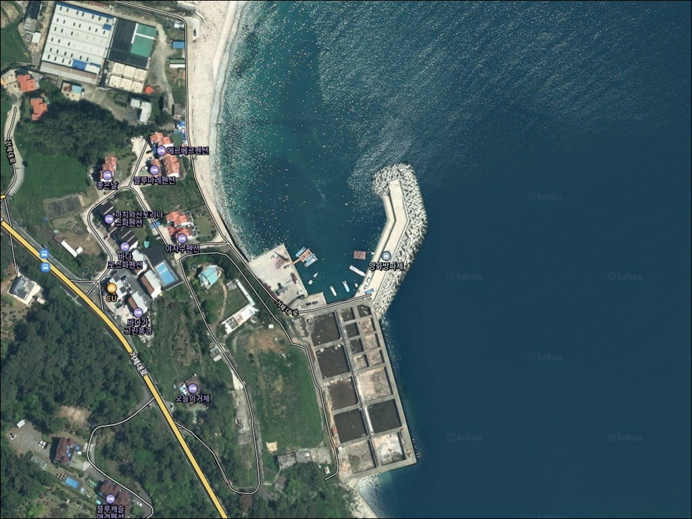
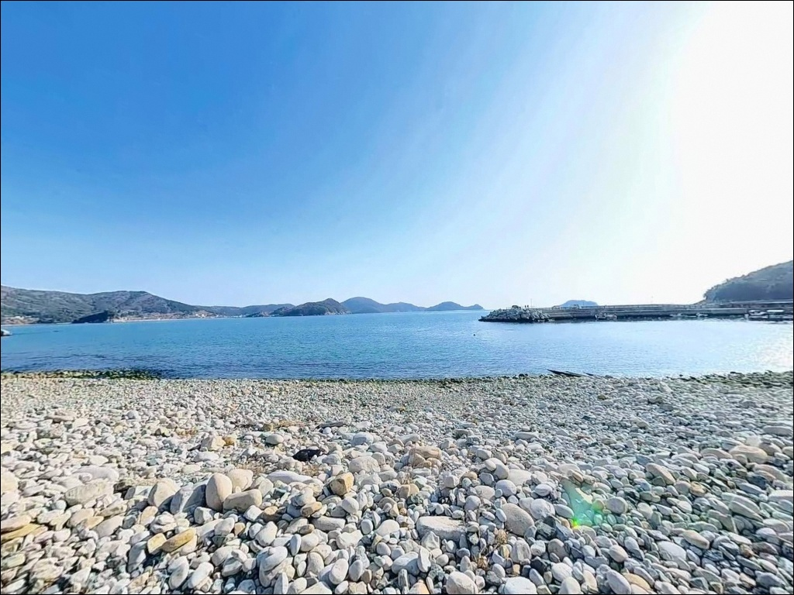
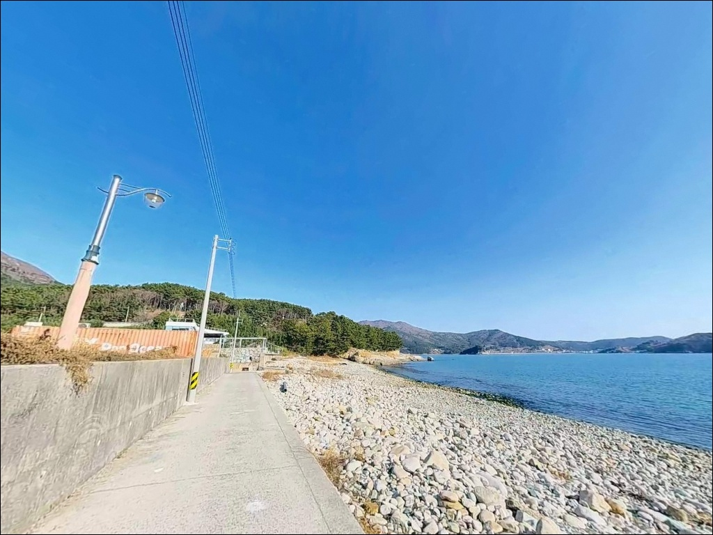
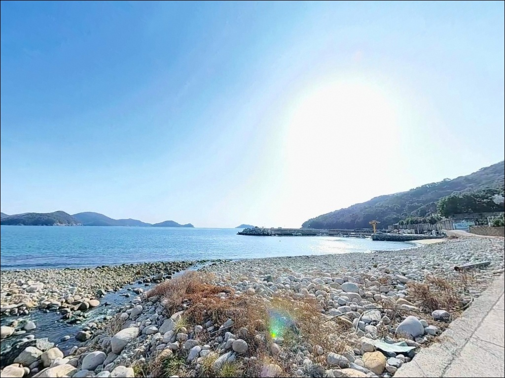
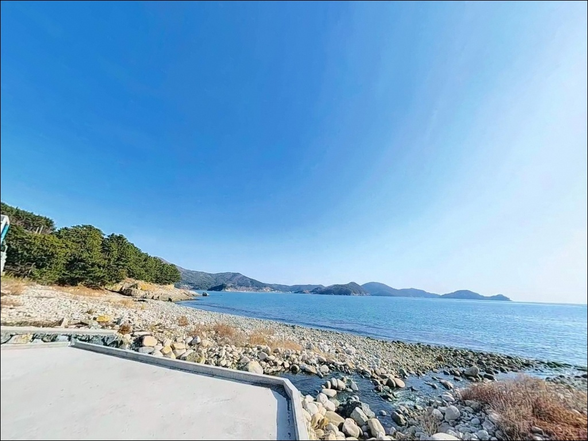
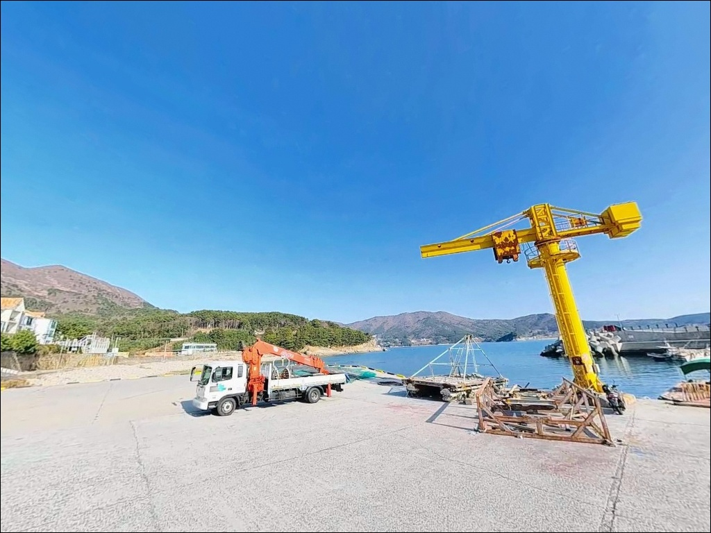
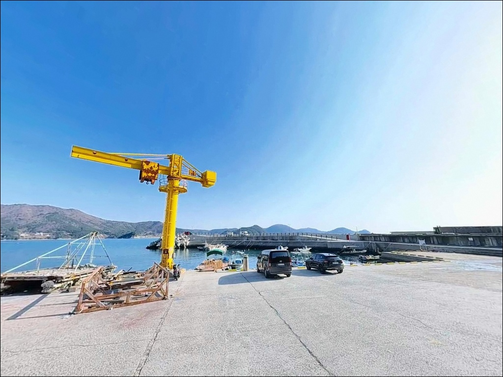
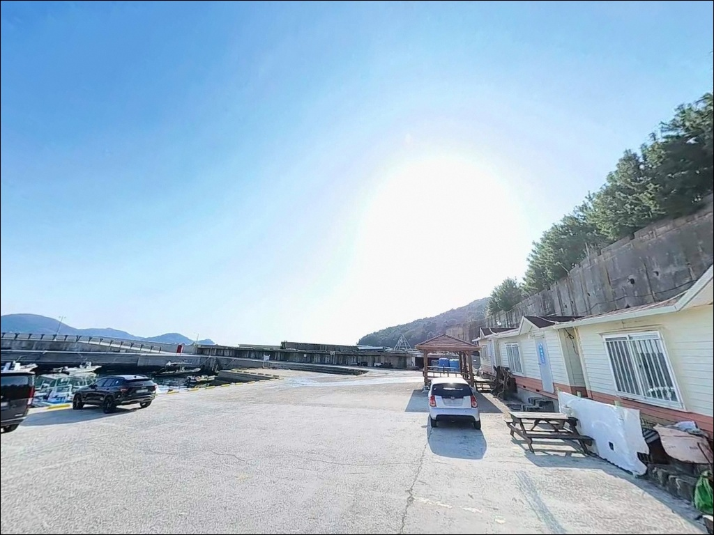
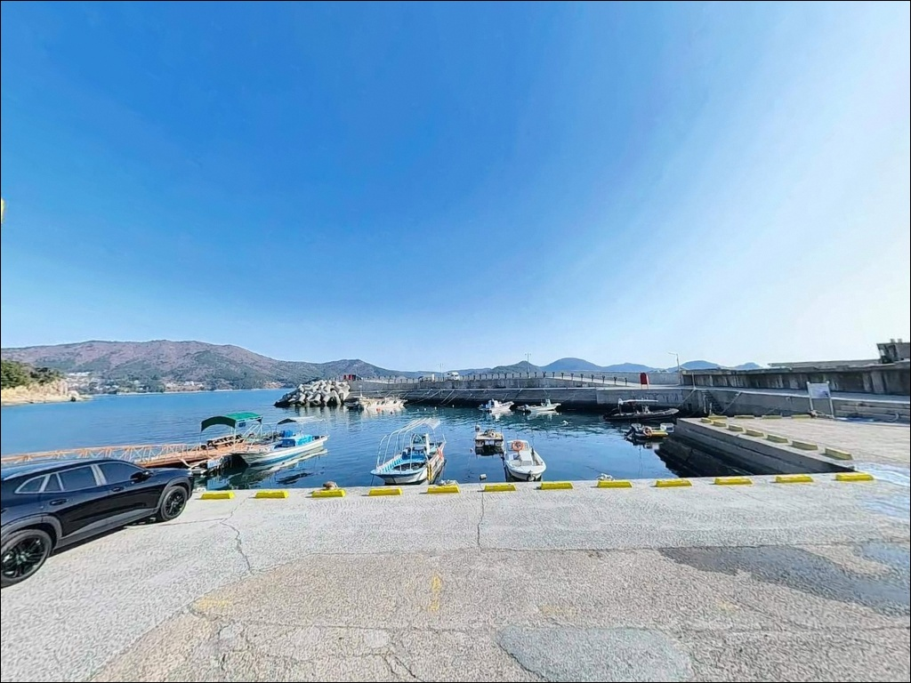

거제 양화방파제 에깅, 콧부리 수심 8m 골자리에서 들어온 입질
이 페이지에는 광고(제휴 링크 포함)가 있으며, 광고 링크를 통해 구매하면 운영자가 판매 수익 또는 수수료를 받을 수 있습니다. 포인트 사진: 카카오맵 스카이뷰·로드뷰. 이 페이지의 지도·사진 이미지는 카카오맵의 실제 서비스 이미지와 다를 수 있습니다.


포인트 안내
양화방파제
경남 거제시 일운면 망치리 744-13
물때 확인 없이 양화방파제에 진입하면
조류가 강하게 흐르는 구간에서
어떤 채비를 써도 바닥에 닿지 않습니다.
망치몽돌해변과 구조라 사이 물목에 자리한 이 방파제는
조류 흐름이 곧 입질 타이밍인 구조로,
타이밍 판단이 조과의 전제 조건입니다.
거제 동남해안, 일운면 망치리 남쪽 끝에 자리한
양화방파제는 동쪽 외해 방향으로 열려 있어
개방형 남해 영향을 직접 받는 소형 방파제입니다.
몽돌과 수중여가 혼합된 해저 지형은
에깅과 찌낚시 모두 노려볼 수 있는
조건을 갖추고 있습니다.
이 글은 양화방파제의
진입 환경, 낚시 여건, 차박 체류 조건에 집중합니다.
조황 단정이나 특정 어종 보장은
이 글의 범위에 포함되지 않습니다.

1. 진입 동선과 포인트 접근성
14번 국도(거제대로)에서 양화마을 방면으로
진입하는 도로는 경사가 완만하고 포장 상태가 양호합니다.
일반 승용차와 캠핑 장비를 실은 SUV도
진입에 큰 무리가 없는 수준이며,
방파제 직전 구간은 폭이 좁아지는 구간이 있으므로
대형 차량은 사전에 위성지도로 확인하는 것이 안전합니다.
방파제 시작 지점과 선착장 배후 부지가 넓어
대형 차량도 회차가 가능한 구조입니다.
방파제 초입 공터와 마을 공동 주차 공간에
약 10~15대 규모의 주차 공간이 확보되어 있습니다.
방파제 자체는 소형이지만 발판이 설치되어 있어
진입 후 낚시 자리를 잡는 데 불편함은 적은 편입니다.
어선 계류 공간과 낚시 자리가 겹치지 않도록
자리를 잡는 것이 기본 매너입니다.

2. 차박 환경과 야간 체류 여건
양화방파제는 망치리 양지마을 해안에 인접한 구조입니다.
방파제 라인을 따라 가로등이 설치되어 있어
야간 가시성은 확보되는 편입니다.
마을 인접 환경이라 완전한 고립형 차박지는 아니며,
야간 소음 관리가 중요한 포인트입니다.
동향 해안선에 위치해 있어
서쪽으로는 북병산 산세가 바람막이 역할을 하는 구조입니다.
동쪽과 남동쪽 방향 외해가 열려 있어
기상에 따라 파도 소음이 있을 수 있으며,
강풍 예보 시에는 차박 체류 자체를 재고하는 편이 좋습니다.
방파제 초입 공터에 주차를 하면
낚시 자리와 차량 사이 거리가 가깝고
이동 동선이 짧아 야간 이동 부담이 적습니다.
비수기를 활용하면 한적한 체류가 가능하지만,
성수기에는 인근 몽돌해수욕장 방문객으로
분위기가 달라질 수 있습니다.


3. 주변 편의시설 및 인프라 현황
양화방파제 인근에는 별도의 편의시설이 없습니다.
차량으로 5분 거리인 구조라 방향으로 이동하면
CU와 GS25 편의점이 위치하며,
낚시 소품, 음료, 얼음 등 기본 보급이 가능합니다.
구조라항 일대에는 낚시점과 수산물 판매점도 있어
출조 전 보급 거점으로 활용하기 좋습니다.
방파제 주변에는 식당이 없습니다.
망치몽돌해변 인근에 펜션과 식당이 분산 배치되어 있으나
이동이 필요한 거리입니다.
식수, 간식, 낚시 미끼는 출발 전에 완비하고
자급 체제로 진입하는 것이 현실적인 준비 방식입니다.

4. 진입 전 반드시 챙겨야 할 준비사항
양화방파제에서 가장 먼저 확인할 것은 물때입니다.
망치몽돌해변과 구조라 사이 물목에 위치한 이 방파제는
들물 시 어군 유입이 활발해지는 구조를 갖고 있습니다.
바다타임에서 망치리 기준 물때를 확인하고
조류가 살아 있는 타이밍에 맞춰
출발 시각을 계획하는 것이 기본입니다.
몽돌과 수중여 혼합 지형이라 채비 손실이 생기는 편입니다.
에깅 채비와 찌낚시 소품은 여분을 충분히 챙겨야 하고,
외항 테트라포드 구간은 미끄럼 위험이 있으므로
갯바위용 신발과 구명조끼는 필수입니다.
야간 낚시 시에는 헤드랜턴도 반드시 챙겨야 합니다.
출조 전에 망치리·일운면 일대 최신 조황 검색을 먼저 해보시기 바랍니다.
기상청 해상특보도 당일 아침에 다시 확인하는 것이
헛걸음을 막는 기본 조건입니다.

5. 에깅과 찌낚시, 어느 자리가 유리한지 가르는 조건
양화방파제의 지형적 핵심은
몽돌과 수중여가 혼합된 해저 구조입니다.
방파제 끝단(콧부리) 주변에는
조류에 의한 골자리가 형성되어 있으며,
이 구간의 수심은 만조 시 8~10m 내외로 깊습니다.
방파제 끝단 콧부리는 조류가 모이는 자리로,
에깅과 찌낚시 모두 입질이 집중되는 구간입니다.
내항 쪽은 콘크리트 직벽 구조이며 수심 3~5m권을 유지합니다.
해초와 몽돌이 발달한 내항 구간은
천천히 탐색하는 에깅 채비에 잘 맞는 환경입니다.
외항 테트라포드 주변은 감성돔·벵에돔 찌낚시 자리로,
조류가 강한 편이라 1호 이상 고부력찌 운용이 기본입니다.
조류 흐름이 빠른 구간에서는
릴찌낚시보다 원투낚시 또는 루어낚시가
채비 컨트롤 면에서 더 유리한 편입니다.
가기 전에 양화방파제 일대 최신 조황 검색을 꼭 해보시기 바랍니다.


6. 포인트에 어울리는 낚시 스타일
이 포인트에서 지형 조건과 가장 잘 맞는 방식은
무늬오징어 에깅입니다.
몽돌, 수중여, 해초가 복합된 해저 구조는
전형적인 무늬오징어 서식 환경입니다.
방파제 끝단에서 외항 방향으로 장거리 캐스팅 후
바닥층을 공략하는 것이 핵심이며,
여름 이후부터 가을까지 시즌이 이어집니다.
봄철 산란 시즌에도 무늬오징어 입질이 기대되는 구조입니다.
감성돔·벵에돔 찌낚시도 이 포인트 지형에 잘 맞습니다.
외항 테트라포드 끝바리에서 전방 수중여 주변을 공략하는 것이
기본 자리 선정 방식입니다.
조류가 강한 날에는 봉돌을 달아 채비 안정성을 높이고,
조류 방향에 맞춰 찌를 흘리는 타이밍이 조과를 가릅니다.
야간에는 볼락 라이트게임도 노려볼 만합니다.
가로등 집어 효과로 내항 석축 주변에서
소형 지그헤드 채비가 유효한 편이며,
전갱이도 같은 조건에서 반응이 나오는 경향이 있습니다.
수심이 깊고 조류가 강한 포인트에서는
물때 확인이 채비 선택보다 먼저 해야 할 판단입니다.

7. 대안 포인트와 플랜 B 동선
양화방파제 자리가 여의치 않거나
조류가 지나치게 강한 타이밍에 도착했다면
구조라방파제가 첫 번째 대안입니다.
약 3.5km 남쪽에 위치하며 양화보다 규모가 크고
수심이 외항 원거리 기준 10m 이상으로 깊습니다.
벵에돔·감성돔·에깅·볼락 루어낚시까지
다양한 장르가 유효한 검증된 포인트이며,
주차 공간도 더 넉넉합니다.
북쪽으로 약 1.5km 이동하면
망치항선착장이 있습니다.
동일 망치리 해역이라 낚시 패턴이 유사하며,
원투낚시·찌낚시 모두 운용 가능한
소형 선착장 구조입니다.
양화방파제와 같은 날 이동하기 좋은
가까운 대안 포인트입니다.
차박 여건을 더 갖춰진 곳에서 이어가고 싶다면
거제구조라수변공원을 고려할 수 있습니다.
낚시 공간과 차량 주차존이 함께 운영되며,
편의점이 인접해 보급이 용이한 구조입니다.

몽돌과 수중여가 있다면
조류 타이밍부터 먼저 맞춰야 합니다
에깅이나 감성돔 찌낚시를 즐기는 낚시인이라면
양화방파제의 지형 조건은 잘 맞는 구조입니다.
외항 콧부리의 깊은 수심과 조류가 만드는 골자리,
내항 몽돌·수중여 복합 지형이
두 가지 낚시 방식을 동시에 노릴 수 있는
판단 근거가 됩니다.
반면 물때 계산 없이 사리 전후에 도착하거나
조류 방향을 파악하지 않고 채비를 내리면
낚시 자체가 성립하지 않는 타이밍을
맞닥뜨릴 수 있습니다.
물때 확인, 진입로 사전 점검, 자급 준비,
이 세 가지를 갖추고 진입한다면
조용하고 알찬 출조가 가능한 포인트입니다.
마을 인접 소형 방파제에서
밀물과 함께 에깅 채비를 풀어놓고
하룻밤 머무는 여정을 계획하는 낚시인이라면,
물때표 하나만 제대로 챙겨도
양화방파제는 충분히 기대할 수 있는 포인트입니다.